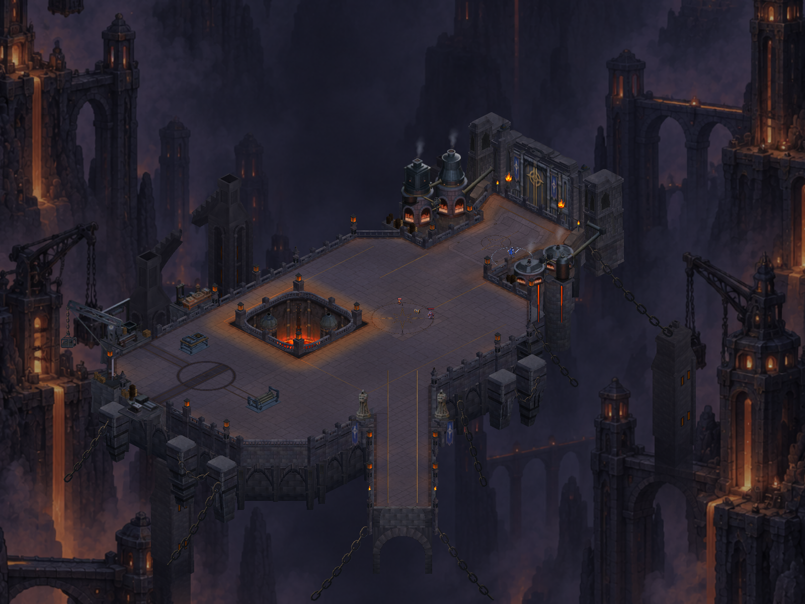

CRYPTFORGE · MİMARİ KARŞILAŞTIRMA
Servis kuleleri ve çalışma alanı
Kuzeybatı servis kulelerinde daralan üst gövdeler, girintili taş yüzeyler ve açık baca ağızları. Vinç ve döküm alanıyla birlikte gerçek Unity görüntülerini karşılaştır.
1.081 test geçti; Android paketi hazır, henüz telefona yüklenmedi. Dokuz aynı açılı karşılaştırma ve bir yeni yakın açı var. Önceki görüntüler 4ac6665 sürümünden doğrulandı. Bunlar gerçek Unity yakalamalarıdır; telefon veya performans ölçümü değildir. Kapsam ve kayıt.
Bu paket yerel bir mimari iyileştirme. Geniş koyu omuz yüzeyleri ve sade alt gövdeler hâlâ referansın gerisinde; haritanın tamamı için görsel çalışma sürüyor.

Sonra · aynı kamera ve ölçek.
Görüntü yüklenemedi. Sayfayı yenileyebilir veya tam boy görüntü bağlantısını açabilirsin.
Onaylı referansı tam boy aç · Görüntülerin Git ve SHA256 kaydı